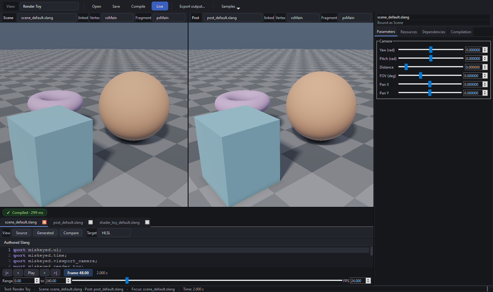

Time is evaluation, not a widget¶
Workbench separates four ideas that small tools often combine:
TimeValue (coordinate + units/second)
!= TimeRange (descriptive domain)
!= TimeTransport (playback policy)
!= TimelineWidget (user interaction)
TimeValue uses a floating-point coordinate and rate, allowing subframes and
external time codes. Conversion through seconds preserves meaning across rates.
TimeRange has start and duration and does not clamp evaluation.
TimeContext owns only the current sample, delta, and monotonically increasing
evaluation index. The index distinguishes repeated evaluations at the same time.
It has no playing state, loop mode, or range. TimeTransport owns those policies:
deterministic seek/step and elapsed-seconds realtime advance both evaluate the same
context. TimelineWidget adapts buttons and a scrubber to the transport; it does
not own either model.
TimeTransport -> TimeContext -> active consumers
|
`-> host-managed miskeyed.time uniforms
Time changes upload reflected uniform values without changing shader identity or triggering compilation. This boundary lets a future USD time-code source, OTIO transport, offline renderer, simulation, or host DCC replace playback policy while consumers keep the same evaluation input.
See cpp/include/miskeyed/workbench/core/TimeContext.h, TimeTransport.h, and
cpp/src/workbench/ui/TimelineWidget.cpp.
